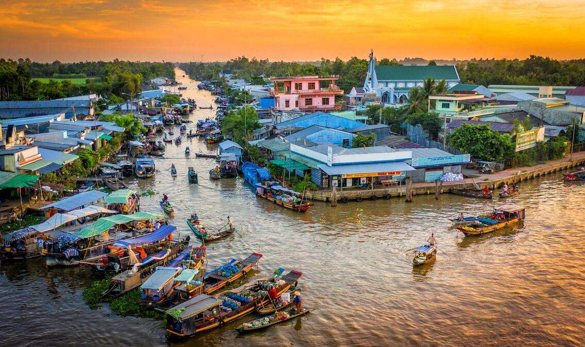
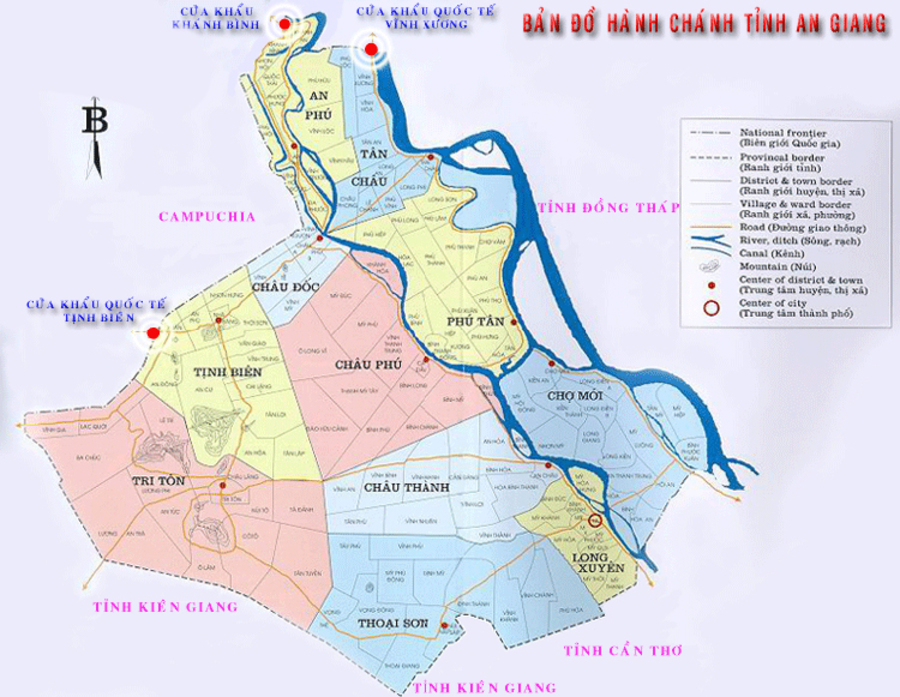
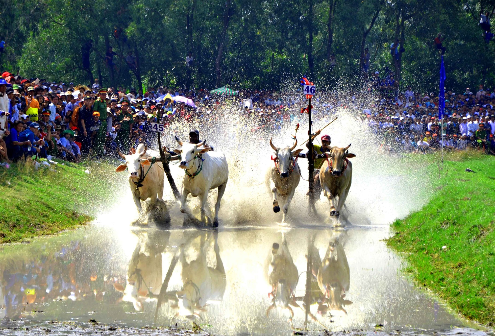
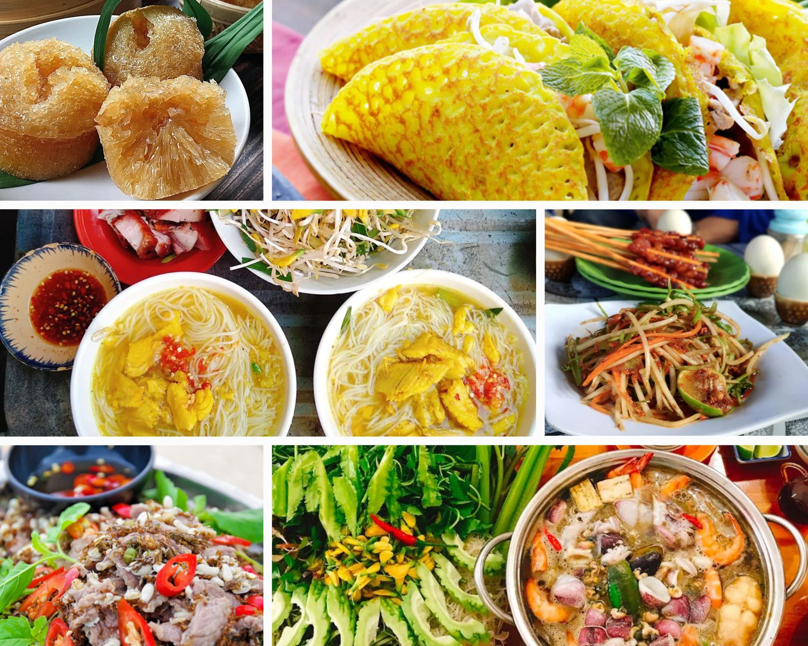

An Giang là tỉnh thuộc vùng Đồng bằng sông Cửu Long, miền Tây Nam Bộ Việt Nam, nổi tiếng với vẻ đẹp thiên nhiên đa dạng (sông nước, đồng lúa, núi non Thất Sơn) và văn hóa phong phú của các dân tộc Kinh, Khmer, Chăm, Hoa. Tỉnh có đường biên giới giáp Campuchia, vị trí chiến lược quan trọng, là cửa ngõ giao thương, thu hút du khách bởi các điểm du lịch tâm linh (Miếu Bà Chúa Xứ Núi Sam), sinh thái (Rừng Tràm Trà Sư) và di tích lịch sử.
Địa hình: Đa dạng với đồng bằng phù sa màu mỡ, sông rạch, và
dãy núi Thất Sơn hùng vĩ (Núi Sam, Núi Cấm). 
Thủy văn: Hệ thống sông ngòi phong phú (sông Tiền, sông Hậu)
với mùa nước nổi đặc trưng, tạo cảnh quan đẹp với bông điên điển,
bông súng.

Đa văn hóa: Sự giao thoa văn hóa giữa các dân tộc Kinh, Khmer, Chăm, Hoa thể hiện qua kiến trúc, lễ hội, ẩm thực. 
Ẩm thực: Đa dạng, phản ánh sự kết hợp văn hóa, nổi tiếng với các món đặc sản miền Tây. 